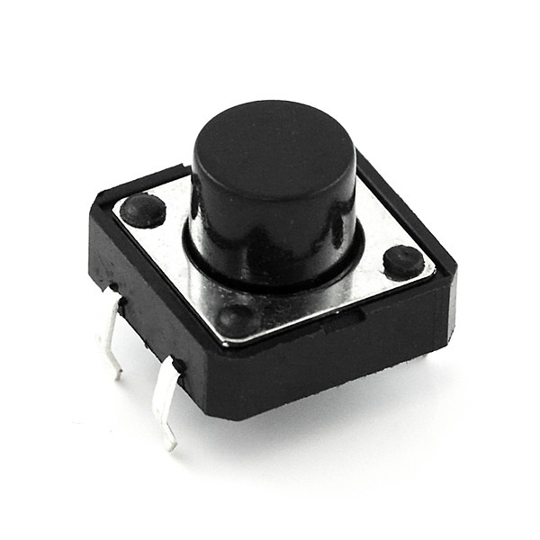
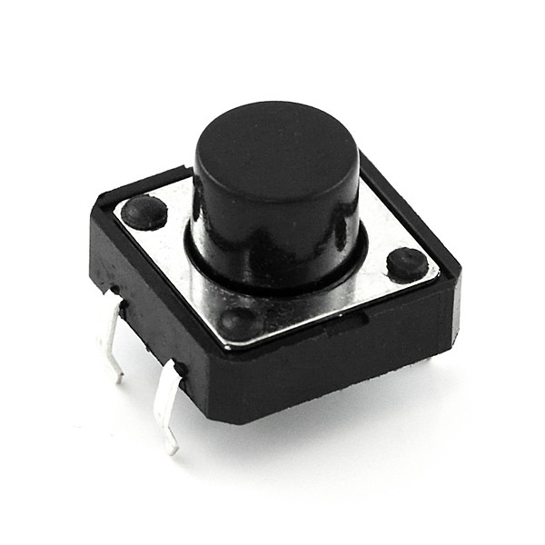

Physical Computing: 2
Physical Computing: 2
Physical Computing: 2
Physical Computing: 2
Slides are here:
http://mhellar.github.io/physcomp2/1
Grab the code here:
http://bit.ly/2eZU35v
- Sensors
- Using a Liquid Crystal Display
- Creating a Twitter Lamp
- Create and Twitter Button
Topics for This Week:
The HC-SR04 ultrasonic sensor uses sonar to determine distance to an object like bats do. It offers excellent non-contact range detection with high accuracy and stable readings in an easy-to-use package. From 2cm to 400 cm or 1” to 13 feet. It operation is not affected by sunlight or black material like Sharp rangefinders are (although acoustically soft materials like cloth can be difficult to detect). It comes complete with ultrasonic transmitter and receiver module.

Upload the Arduino sketch in hc-04-code/hc-04 and then check the output in the serial monitor
Open hc04_p5js in a text editor and the terminal. Change the port. NPM install. Make slight change to Arduino code. Node app.js and open localhost:3000 in your browser
The ADXL345

Install the Adafruit ADXL354 Library, and run sensor test
Let's hook up the Liquid Crystal Display

Detailed Reference
Unplug your Arduino from USB
Hook up according to the diagram
Call out if you need help!
Arduino Examples:
code7/HelloWorld/HelloWorld.ino
code7/Display/Display.ino
code7/SerialDisplay/SerialDisplay.ino
Johnny Five Examples
Upload Firmata to Arduino
code7/j5_lcd_weather
node app.js
code7/j5_lcd_bart
node app.js
Project: Twitter Lamp

Keep the same circuit
Go Here:
https://apps.twitter.com/

create a new app
Gather tokens and keys

Update code in code/twitter-ard/app.js
var client = new Twitter({
consumer_key: 'Enter Here',
consumer_secret: 'Enter Here',
access_token_key: 'Enter Here',
access_token_secret: 'Enter Here'
})
From the terminal:
'cd twitter-ard'
'node app.js'
From the terminal:
'cd twitter-ard-location'
'node app.js'
Twitter API Reference
Here
Project: Twitter Button
 


Update code in code/twitter-ard/app.js
var client = new Twitter({
consumer_key: 'Enter Here',
consumer_secret: 'Enter Here',
access_token_key: 'Enter Here',
access_token_secret: 'Enter Here'
})